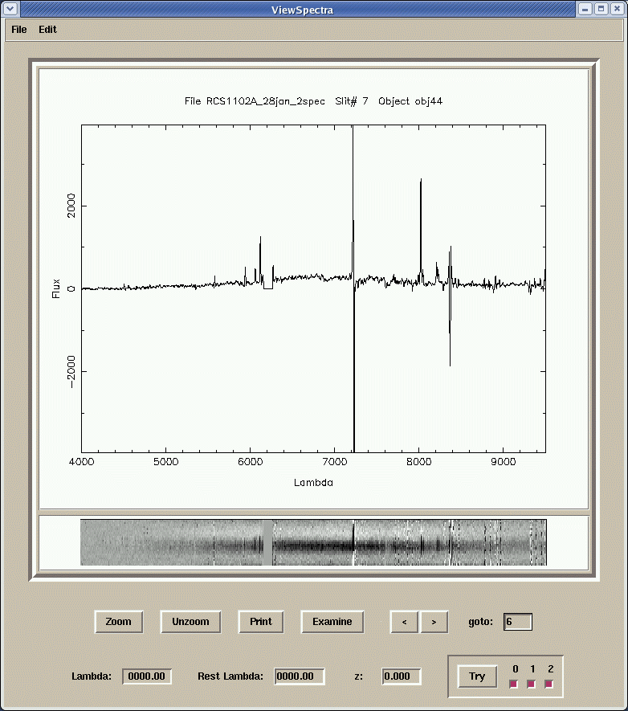

viewspectra is a graphical tool for viewing 1-d or 2-d spectra, either single spectra or spectral stacks produced with extract or extract-2dspec.
| USAGE | viewspectra
| ||||||||||||||||
| INPUT | none | ||||||||||||||||
| OUTPUT | none | ||||||||||||||||
| PARAMETERS |
|
The main viewspectra window looks like this:

The file menu does the usual. Note that, in specifying a file name, you need
not include the .fits extension.
The edit menu allows one to change some of the parameters set in the viewspectra.par file, as well as other parameters.
The line list file may contain a list of candidate object lines, to aid in line identification. It's format is as follows:
wavelength type label name
type may be 0, 1, or 2. Lines of type are displayed in blue, type 1 in green,
and type 2 in red. The label and name are optional. The label parameter
identifies the line in the display. The name is used in connection with the
line buttons option. If line buttons is set a another window is opened with
one button for each line in the line list file which has a name specified:Pressing a button inserts the wavelength of that line into the Rest Lambda box (for which see below).
If a log file name is specified, then a record of the session is maintained in a log file. This record includes the name of each object whose spectrum is displayed, and parameters of each line measured in each object. Be sure that this entry is blank if no logfile is desired.
The EW/(1+z) button affects the calculation of equivalent widths in the line examination window. If this button is set, than measured equivalent widths are adjusted to rest frame values, using the current value of the redshift.
The Autoscale button determines whether the gray scale levels of the spectrum image are calculated automatically, or are set the the values specified in the Min, max inten boxes.
The upper plot is a trace of the spectrum. If the lambda0 and lambda1
parameters are set to values within the range of the data, only values within
the smaller range are displayed. If a 2-d spectrum, the displayed spectrum is
extracted in a strip centered on the expected slit position of the object +-
the number of rows specified with the halfwdth parameter. If parameter nod is set to
a non-zero value, the trace is the sum of the spectrum in the strip and the
negative of the spectrum in a strip offset by nod distance.
The lower plot is a gray-scale image of the spectrum (if 2-d). If shuffle is
set to "yes", it is the image of the difference between the two shuffled
spectra. Clicking on a row within this image changes the central extraction
line for the upper plot. The current extraction ranges are indicated by the
boxes at the end of the spectra. viewspectra usually does a good job of
calculating appropriate intensity ranges for the spectrum image. However, if
the range needs changing, clicking the right mouse button within the lower
window brings up a pop-up window:
New values entered take effect when a carriage return is hit, or when Done is pressed.
| Zoom: | zoom in on the plots. Move the mouse to the lower left hand corner of the region desired, click and hold while moving to the upper right hand corner, then release. The x2 and /2 buttons zoom the vertical scales up and down by factors of two. |
| Unzoom: | go back to full plot |
| Print: | creates a postscript file of the current spectrum plot, names pgplot.ps. |
| Examine: | opens the line examination window, centered on the wavelength specified in the Lambda window. |
If the opened file is a stack of 1-d or 2-d spectra, then the following buttons allow one to move between spectra:
| < > | move forward or back one spectrum. |
| goto: | enter a spectrum number and hit return, to move to that spectrum. |
| Lambda: | displays the wavelength of a feature pointed to with a mouse click, or calculated in the line examination window (see below). |
| Rest Lambda: | used in combination with a value in the Lambda box to calculate the redshift |
| z: | redshift, calculated from Rest Lambda and Lambda, or entered for use with Try. Entering a value followed by <return> executes Try. |
| Try: | displays, in the spectrum plot, the expected wavelengths of the lines listed in the linelist file, for the redshift in the z box. The buttons to the right of the Try button set which of the three types of lines are displayed.
|
The line examination window shows a section of spectrum, centered on the
wavelength given in the Lambda window, and of halfwidth set by the
lamint parameter. The black plot is the raw, unsmoothed spectrum; the blue plot
is the smoothed spectrum, as displayed in the main spectrum window. Spectral
lines may be fit with a Gaussian by clicking on two points to the left and
right of the line, at wavelengths which are the minimum and maximum wavelengths
over which the fit is to be made, and at flux levels which specify the
continuum levels at these two wavelengths. The continuum is set to a straight
line between these two points, subtracted off, and a Gaussian fit to the
remaining flux. The results for line center, standard deviation and equivalent
width (corrected, if set in preferences, to rest frame values) , all in
Angstroms, are displayed in the Lambda, sigma and EW boxes. The redshift, z, is
recalculated on the basis of the Rest Lambda and the new line center. A rest
wavelength must be specified for all of this to work correctly.
The Clear button clears the current fit; the Done button closes the window. The Record button writes the Rest lambda, Lambda, z, sigma, and EW values into the log file, if data logging is switched on.
As of COSMOS 2.21, there are a few key bindings for convenience.
Currently, the plot of the 1-D spectrum does not fit in the frame, and you have to scroll with the mouse wheel in order to see parts of the plot. At the moment, this cannot be avoided for laptops with smaller screens, but if you are using a separate monitor, you can switch to a window that has the proper dimensions by pressing the number "2" on your keyboard. If you need to switch back to the older window dimensions, for some reason, you can do so by pressing the number "1".
You can also quit viewspectra by pressing "q" on your keyboard.